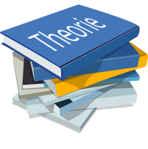

De opleiding is 3 jaar lang:
Jaar 1 |
Jaar 2 |
Jaar 3 |
|---|---|---|
Heel gericht op theorie. Je maakt projecten zoals deze site, en leert basiskennis over verschillende programmeertalen. |
Je begint het jaar met een stage. Hierop wordt je uitgebreid in het eerste jaar voorbereid. Ook maak je al examens voor enkele vakken. |
Je bent voornamelijk op stage om werkervaring op te doen in de richting van software development, met alle skills die je hebt geleerd. Aan het einde van het jaar maak je nog enkele examens en kan hierna de studie succesvol afronden! |
|  |